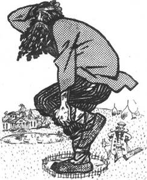
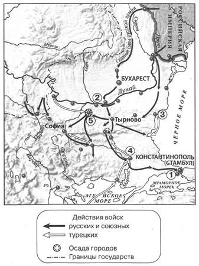
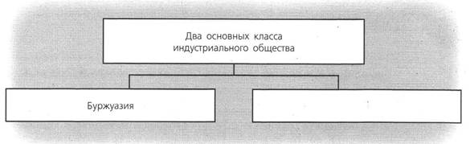
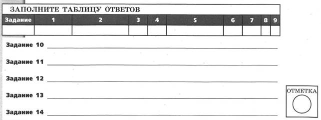
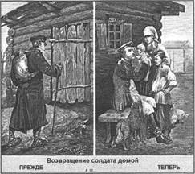
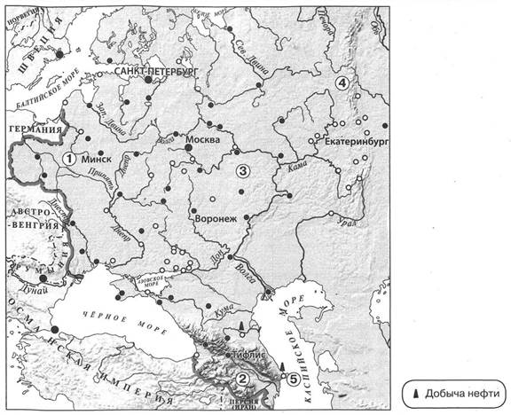
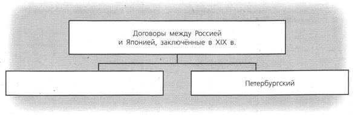
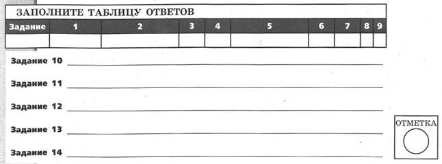
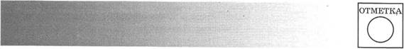
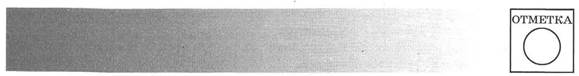

КОНТРОЛЬНАЯ РАБОТА № 1
ВАРИАНТ 1
1. Расположите события в хронологическом порядке.
A) создание организации «Чёрный передел»
Б) начало реформы городского самоуправления
B) убийство Александра II
Г) издание «Общего положения о крестьянах, вышедших из крепостной зависимости»
Запишите получившуюся последовательность букв.
2. Установите соответствие между событиями и годами.
СОБЫТИЯ
A) начало проведения судебной реформы Александра II
Б) Берлинский конгресс
B) продажа Аляски Соединённым Штатам Америки
ГОДЫ
1) 1857 г.
2) 1864 г.
3) 1867 г.
4) 1878 г.
Запишите цифры, соответствующие выбранным ответам.
3. Прочитайте отрывок из нормативного акта и выберите два верных суждения.
...Защита престола и отечества есть священная обязанность каждого русского подданного. Мужское население, без различия состояний, подлежит воинской повинности.
...Денежный выкуп от воинской повинности и замена охотником не допускаются.
...Вооружённые силы государства состоят из постоянных войск и ополчения. Сие последнее созывается лишь в чрезвычайных обстоятельствах военного времени...
...Число людей, потребное для пополнения армии и флота, определяется ежегодно законодательным порядком.
...Поступление на службу по призывам решается жребием, который вынимается единожды на всю жизнь. Лица, по номеру вынутого ими жребия не подлежащие поступлению в постоянные войска, зачисляются в ополчение.
1) Данный нормативный акт был издан в 1860-е гг.
2) Согласно данному нормативному акту дворяне освобождались от воинской службы.
3) В соответствии с данным нормативным актом вопрос о том, кто будет призван на военную службу, решался с помощью жеребьёвки.
4) В соответствии с данным нормативным актом мужчин могли зачислять в ополчение без прохождения военной службы.
5) В соответствии с данным нормативным актом ополчение могло созываться в мирное время.
4. Какие утверждения о земской и городской реформах являются верными? Укажите два утверждения.
1) Участвовать в выборах в уездные земские собрания могли не только мужчины, но и женщины.
2) Избиратели представителей в земские органы самоуправления были разделены на три курии (разряда).
3) Земским учреждениям разрешалось критиковать политические решения, принимаемые властями.
4) В земских учреждениях не было представителей крестьян.
5) В выборах гласных городских дум принимали участие только городские налогоплательщики.
5. Установите соответствие между событиями (процессами, явлениями) и участниками этих событий (процессов, явлений).
СОБЫТИЯ (ПРОЦЕССЫ, ЯВЛЕНИЯ)
A) подготовка военных реформ
Б) пересмотр условий Парижского мирного договора
B) деятельность народников
УЧАСТНИКИ
1) М.А. Бакунин
2) К.С. Аксаков
3) Д.А. Милютин
4) А.М. Горчаков
Запишите цифры, соответствующие выбранным ответам.
6. Рассмотрите изображение и укажите два верных суждения.
1) Карикатура посвящена недостаткам судебной реформы Александра И.
2) Споры между людьми, изображёнными на карикатуре, должны были урегулировать мировые посредники.
3) Ситуация, изображённая на карикатуре, приводила к распространению отработочной системы труда.
4) По условиям реформ, проведённых при Александре II, земля, на которой изображённый на карикатуре человек стоит на одной ноге, не принадлежала этому человеку и никогда не могла быть им выкуплена.
5) В результате реформ, проведённых при Александре II, человек, изображённый на карикатуре стоящим на одной ноге, утратил право распоряжаться своим имуществом.
— Что ты, мужичок, на одной ноге стоишь?
— Да другую, видишь, поставить некуда. Везде вашей милости землица.

7. Прочитайте текст, в котором предложения пронумерованы. Данный текст содержит две ошибки. Фрагменты текста, в которых, возможно, сделаны ошибки, подчёркнуты и выделены полужирным шрифтом.
(1) До середины XIX в. Россия не имела официально признанных границ со своими соседями на Дальнем Востоке. (2) Большое не только научное, но и политическое значение имела экспедиция адмирала Е.П. Хабарова на побережье Татарского пролива, а также деятельность генерал-губернатора Восточной Сибири Н.Н. Муравьёва. (3) Для закрепления, освоения и охраны земель вдоль Амура в 1851 г. было создано Забайкальское, а в 1858 г. — Амурское казачье войско. (4) Развязанная в конце 1850-х гг. Англией и Францией «опиумная война» против Китая не была поддержана Россией, что вызвало благожелательный отклик в Пекине, чем и воспользовался Н.Н. Муравьёв. (5) В мае 1858 г. Н.Н. Муравьёв подписал с представителями китайского правительства Петербургский договор. (6) По этому договору граница с Китаем устанавливалась по реке Амур до впадения в него реки Уссури. (7) Уссурийский край между этой рекой и Тихим океаном объявлялся совместным русско-китайским владением.
Укажите номера предложений, в которых есть фрагменты, содержащие ошибки.
Рассмотрите карту и выполните задания 8—10.

8. Укажите год, когда начались военные действия, обозначенные на карте стрелками.
1) 1856 г.
2) 1873 г.
3) 1877 г.
4) 1881 г.
9. Какой цифрой обозначен населённый пункт, где был подписан мирный договор, завершивший войну, события которой обозначены на карте стрелками?
10. Запишите название города, обозначенного на карте цифрой 5.
Ответ:
11. Запишите название организации, о которой идёт речь.
Революционная народническая организация, возникшая в 1879 г. Члены организации вели агитацию во всех слоях общества, организовывали террористические акты.
Ответ:
Прочитайте отрывок из сочинения историка и выполните задание 12.
Сборы хлебов на душу сельского населения с 70-х по 90-е гг. XIX в. выросли в Северо-Западном регионе — с 13 до 14 пудов; в Центрально-Промышленном регионе — с 13 до 15 пудов; в Приуралье — с 21 до 28 пудов, а всего в Нечерноземье — с 16 до 18 пудов. В пореформенное время стала более существенной роль картофеля. С учётом его (в переводе на зерно из расчёта 3 пуда за 1 пуд зерна) душевой сбор в Нечерноземье вырос с 17 до 20,4 пуда. В целом по Европейской России душевой сбор с учётом картофеля вырос с 21 до 25 пудов.
12. Рассмотрите таблицу, составленную на основе данных, приведённых в отрывке (заголовки строк и столбцов в таблице обозначены буквами).
Запишите заголовок строки таблицы, обозначенной буквой «Д».
|
А |
Б |
|
|
В |
13 пудов |
14 пудов |
|
Г |
13 пудов |
15 пудов |
|
Д |
21 пуд |
28 пудов |
Ответ:
13. Прочитайте отрывок из указа императора и запишите фамилию, пропущенную в тексте.
...Учредить в Санкт-Петербурге Верховную распорядительную комиссию по охранению государственного порядка и общественного спокойствия.
...Верховной распорядительной комиссии состоять из главного начальника оной и назначаемых для содействия ему, по непосредственному его усмотрению, членов комиссии.
...Главным начальником Верховной распорядительной комиссии быть временному харьковскому генерал-губернатору, нашему генерал-адъютанту, члену Государственного совета, генералу от кавалерии графу ____, с оставлением членом Государственного совета и в звании нашего генерал-адъютанта.
Ответ:
14. Заполните пропуск в схеме.

Ответ:

ВАРИАНТ 2
1. Расположите события в хронологическом порядке.
A) учреждение земских управ
Б) создание Верховной распорядительной комиссии по охране государственного порядка и общественного спокойствия
B) преобразование Секретного комитета в Главный комитет по крестьянскому делу
Г) первое «хождение в народ»
Запишите получившуюся последовательность букв.
2. Установите соответствие между событиями и годами.
СОБЫТИЯ
A) начало восстания в Царстве Польском
Б) взрыв в Зимнем дворце, подготовленный народовольцем С.Н. Халтуриным
B) подписание Айгунского договора
ГОДЫ
1) 1858 г.
2) 1863 г.
3) 1874 г.
4) 1880 г.
Запишите цифры, соответствующие выбранным ответам.
3. Прочитайте отрывок и выберите два верных суждения.
...Заседания, кроме случаев, указанных в законе, происходят публично... ...По делам о преступлениях и проступках, влекущих за собою наказания, соединённые с лишением всех прав состояния или с потерею всех или некоторых особенных прав и преимуществ, определение вины или невинности подсудимых предоставляется особым присяжным заседателям. Сие правило не распространяется на дела о преступлениях государственных.
...Различие подсудности по сословиям отменяется...
...Дела о преступлениях и проступках, не изъятых особыми постановлениями от общей подсудности, ведаются: мировыми судьями, их съездами, окружными судами, судебными палатами и кассационными департаментами Правительствующего сената...
1) Данный нормативный акт был издан в 1870-х гг.
2) Согласно документу определение вины обвиняемых в государственных преступлениях предоставлялось присяжным заседателям.
3) Согласно документу для каждого сословия вводился отдельный суд.
4) Согласно документу судебные заседания проводились публично.
5) Согласно документу в России вводился мировой суд.
4. Укажите два верных утверждения о внешней политике России.
1) В 1860-х гг. было образовано Туркестанское генерал-губернаторство.
2) По Пекинскому договору 1860 г. Уссурийский край стал владением России.
3) По Симодскому договору 1855 г. Курильские острова перешли к Японии.
4) Аляска была продана США в период Крымской войны.
5) Одной из стран — участниц «Союза трёх императоров» была Франция.
5. Установите соответствие между событиями (процессами, явлениями) и участниками этих событий (процессов, явлений).
СОБЫТИЯ (ПРОЦЕССЫ, ЯВЛЕНИЯ)
A) деятельность народников
Б) деятельность Верховной распорядительной комиссии по охране государственного порядка и общественного спокойствия
B) деятельность Редакционных комиссий
УЧАСТНИКИ
1) Я.И. Ростовцев
2) М.Т. Лорис-Меликов
3) П.С. Нахимов
4) П.Л. Лавров
Запишите цифры, соответствующие выбранным ответам.
6. Рассмотрите изображение и укажите два верных суждения
1) Изображение посвящено изменениям, ставшим прямым результатом открытия военных учебных заведений в период правления Александра II.
2) Солдат, изображённый на картине слева, — представитель дворянского сословия.
3) Реформа, последствиям которой посвящена картина, была проведена в 1870-х гг.
4) Солдат, изображённый на картине справа, по возвращении с действительной службы зачислен в запас.
5) Солдат, изображённый на картине справа, к моменту возвращения домой прослужил 20 лет.

7. Прочитайте текст, в котором предложения пронумерованы. Данный текст содержит две ошибки. Фрагменты текста, в которых, возможно, сделаны ошибки, подчёркнуты и выделены полужирным шрифтом.
(1) Начавшаяся русско-турецкая война велась на Балканском и Кавказском театре военных действий. (2) На балканском фронте особенно тяжёлой оказалась осада Плевны. которую оборонял талантливый турецкий полководец Осман-паша. (3) Турецкие войска обороняли город несколько месяцев, но в ноябре 1877 г. были вынуждены сдаться. (4) Русская армия начала быстрое наступление в зимних условиях. (5) На кавказском фронте русские войска в короткие сроки разбили превосходящие турецкие войска и овладели крепостями Баязет, Ардаган, Карс, выйдя к Измаилу. (6) Война завершилась занятием русской армией местечка Сан-Стефано. Здесь и был заключён мирный договор, по которому Греция. Черногория и Румыния стали независимыми государствами, а Болгария становилась автономным княжеством в составе Турции.
Укажите номера предложений, в которых есть фрагменты, содержащие ошибки.
Рассмотрите карту и выполните задания 8—10.

8. Знаками (о) на карте обозначены:
1) центры пищевой промышленности
2) центры текстильной промышленности и хлопкоочистки
3) центры металлургической, машиностроительной и металлообрабатывающей промышленности
4) центры лесной, деревообрабатывающей и целлюлозно-бумажной промышленности
9. Какой цифрой на карте обозначена территория, на которой в помещичьих хозяйствах преобладала отработочная система труда?
10. Запишите название города, обозначенного на карте цифрой 5.
Ответ:
11. Запишите термин, о котором идёт речь.
Должностное лицо, назначавшееся из дворян для утверждения уставных грамот и разбора конфликтов между крестьянами и помещиками в период проведения крестьянской реформы в правление Александра II.
Ответ:
Прочитайте отрывок из сочинения историка и выполните задание 12.
Имущественное неравенство внутри общины стало заметным, в повседневный обиход вошли такие понятия, как «кулаки-мироеды», «батраки». По данным земской статистики конца XIX в., у 20 % зажиточных крестьян было около 50 % посевной площади, в то время как у 50 % бедных дворов она составляла около 18 %. На один крестьянский двор у зажиточных крестьян приходилось 20 десятин земли, находившейся в пользовании, у бедных — около 3,5 десятины. У зажиточных крестьян было не только больше посевных площадей, но и больше лошадей, домашнего скота, инвентаря, сельскохозяйственных машин. Треть зажиточных крестьян нанимала батраков.
12. Рассмотрите таблицу, составленную на основе данных, приведённых в отрывке (заголовки строк и столбцов в таблице обозначены буквами).
Запишите заголовок столбца таблицы, обозначенного буквой «А».
|
А |
Б |
|
|
В |
50 % площади |
18% площади; |
|
Г |
20 десятин |
3,5 десятины |
Ответ:
13. Прочитайте отрывок из международного документа и запишите фамилию государственного деятеля, выступившего с приведённым в документе заявлением.
Государь император, в доверии к чувству справедливости держав, подписавших трактат 1856 г., и к их сознанию собственного достоинства, повелевает вам объявить: что его императорское величество не может долее считать себя связанным обязательствами трактата 18/30 марта 1856 г., насколько они ограничивают его верховные права в Чёрном море;
что его императорское величество считает своим правом и своей обязанностью заявить его величеству султану о прекращении силы отдельной и дополнительной к помянутому трактату конвенции, определяющей количество и размеры военных судов, которые обе прибрежные державы предоставили себе содержать в Чёрном море;
что государь император прямодушно уведомляет о том державы, подписавшие и гарантировавшие общий трактат, существенную часть которого составляет эта отдельная конвенция;
что его императорское величество возвращает в этом отношении его величеству султану права его во всей полноте, точно так же как восстанавливает свои собственные.
Ответ:
14. Заполните пропуск в схеме.

Ответ:

КОНТРОЛЬНАЯ РАБОТА № 2
ВАРИАНТ 1
1. В XIX в. в России происходил промышленный переворот. Укажите десятилетие, когда в России начался промышленный переворот. В чём состояла техническая сторона промышленного переворота? Укажите одну любую особенность промышленного переворота в России.
2. Существует точка зрения, что в период правления Александра II России удалось восстановить авторитет на международной арене.
Приведите два аргумента в подтверждение данной точки зрения.
3. Прочитайте отрывок из речи адвоката на суде и выполните задания.
Вера Ивановна Засулич принадлежит к молодому поколению. Она стала себя помнить тогда уже, когда наступили новые порядки, когда розги отошли в область преданий. Но мы, люди предшествовавшего поколения, мы ещё помним полное господство розог... Через пятнадцать лет после отмены розог... над политическим осуждённым арестантом было совершено позорное сечение. Обстоятельство это не могло укрыться от внимания общества: о нём заговорили в Петербурге, о нём вскоре появляются газетные известия. И вот эти-то газетные известия дали первый толчок мысли В. Засулич. Короткое газетное известие о наказании Боголюбова розгами не могло не произвести на Засулич подавляющего впечатления. Какое, думала Засулич, мучительное истязание, какое презрительное поругание над всем, что составляет самое существенное достояние развитого человека, и не только развитого, но и всякого, кому не чуждо чувство чести и человеческого достоинства.
В совершении какого преступления обвиняли названную в отрывке женщину? Укажите год, когда произошло событие.
Какое событие, по мнению адвоката, произвело «подавляющее впечатление» на подсудимую? В чём, по мнению адвоката, причина такого впечатления?
Укажите название течения в радикальном общественном движении, к которому принадлежала обвиняемая. Укажите любые два не связанные с содержанием данного отрывка события (процесса), непосредственными участниками которых были представители этого течения.
4. Сравните выборы в земские собрания и выборы в городские думы. Самостоятельно сформулируйте линии (критерии) сравнения.
Приведите две общие характеристики и два различия. Заполните таблицы.
Общее
|
Линии (критерии) сравнения |
Выборы в земские собрания и городские думы |
Различия
|
Линии (критерии) сравнения |
Выборы в земские собрания |
Выборы в городские думы |

ВАРИАНТ 2
1. В 1861 г. в России было отменено крепостное право. Укажите внешнеполитическое событие, повлиявшее на решение императора отменить крепостное право. Как это событие связано с принятием решения об отмене крепостного права? Укажите ещё одну любую причину (предпосылку) отмены крепостного права в России.
2. Считается, что решения Берлинского конгресса означали дипломатическое поражение России. Приведите два аргумента в подтверждение данной точки зрения.
3. Прочитайте отрывок из воспоминаний современника и выполните задания.
Сначала, пока помещики ещё не понимали значения отрезков, и там, где крестьяне были попрактичнее и менее надеялись на «новую волю», они успели приобрести отрезки в собственность, или за деньги, или за какую-нибудь отработку, такие теперь сравнительно благоденствуют. Теперь же значение отрезков все понимают, и каждый покупатель имения, каждый арендатор, даже не умеющий по-русски говорить немец, прежде всего смотрит, есть ли отрезки, как они расположены и насколько затесняют крестьян. У нас повсеместно за отрезки крестьяне обрабатывают помещикам землю — именно работают круги, то есть на своих лошадях, со своими орудиями, производят, как при крепостном праве, полную обработку во всех трёх полях. Оцениваются эти отрезки — часто, в сущности, просто ничего не стоящие — не по качеству земли, не по производительности их, а лишь по тому, насколько они необходимы крестьянам, насколько они их затесняют, насколько возможно выжать с крестьян за эти отрезки.
Укажите название реформы, последствия которой описаны в данном отрывке. В каком году началось её проведение?
На что, по мнению автора, прежде всего обращается внимание при покупке или аренде помещичьего имения? Почему?
Укажите любые три положения названной вами реформы, о которых не идёт речь в данном отрывке.
4. Сравните теоретические положения анархического и заговорщицкого направлений в народничестве. Самостоятельно сформулируйте линии (критерии) сравнения. Приведите две общие характеристики и два различия.
Ответ оформите в виде таблиц.
Общее
|
Линии (критерии) сравнения |
Анархическое и заговорщицкое направления |
Различия
|
Линии (критерии) сравнения |
Анархическое направление |
Заговорщицкое направление |
